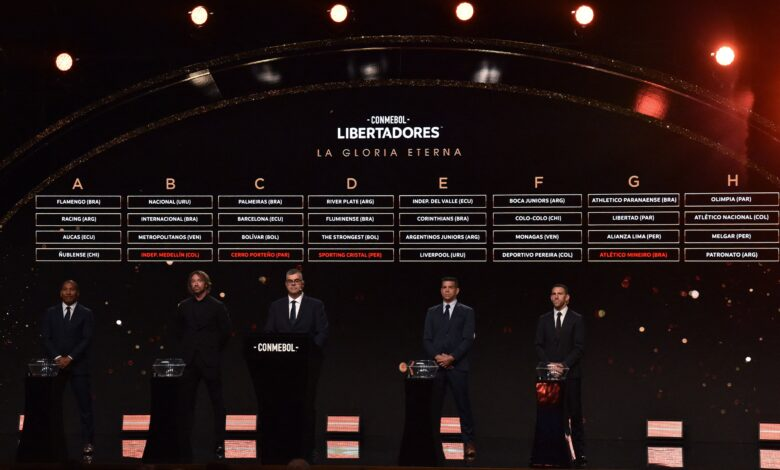

Fases Preliminares: São divididas em três etapa onde equipes de países com menor coeficiente competem entre si. Os vencedores dessas fases classificam para a próxima rodada.
Fase de Grupos: As equipes que se classificam das fases preliminares se juntam aos times que já garantiram vaga diretamente. A fase de grupos é composta por 8, com quatro times em cada grupo. As duas primeiras equipes de cada grupo classificam para as oitavas de final.
Eliminatórias: A partir das oitavas, as equipes jogam em mata-mata, quem perder está fora, nessa fase os jogos possuem ida e volta, as equipes jogam em seu estádio e no estádio adversário, exceto a final, que é apenas um jogo.
Ligas Nacionais: Os times avançam com base em suas posições nas ligas de cada país. Os campeões e os melhores colocados de cada liga tem sua vaga garantida.
Fases Preliminares: Alguns países possuem times que necessitam passar por fases preliminares. Essas fases consistem em várias etapas eliminatórias, onde equipes de ligas menores se enfrentam para garantir uma vaga na fase de grupos.
Vagas Diretas: Os clubes que têm melhor desempenho em suas ligas podem se classificar diretamente para a fase de grupos. O número de vagas muda de acordo com o coeficiente da Conmebol, que leva em consideração o desempenho dos clubes em torneios internacionais. Ranking da Conmebol: O ranking dos times também acaba influenciando na distribuição das vagas, com equipes de países com maior desempenho histórico tendo mais chances de participar. Ou seja, a classificação envolve desempenho em ligas nacionais e o sistema de fases preliminares, sendo essa a competitividade do futebol sul-americano.